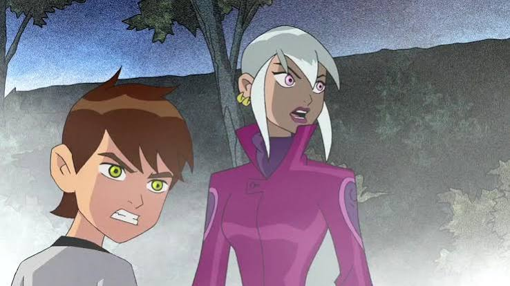

În timp ce Ben, Gwen și bunicul Max vizitează orașul Salem, Charmcaster apare cu un plan prin care vrea să obțină puterile Omnitrixului. În timpul confruntării, vraja ei provoacă o încurcătură neașteptată: Charmcaster ajunge în corpul lui Gwen, iar Gwen rămâne blocată în corpul vrăjitoarei. Charmcaster încearcă să-l păcălească pe Ben și să-și ducă planul la capăt. Gwen trebuie să evadeze și să-i convingă pe Ben și Max de adevăr înainte ca Charmcaster să pună mâna pe Omnitrix.
▶ URMĂREȘTE EPISODUL